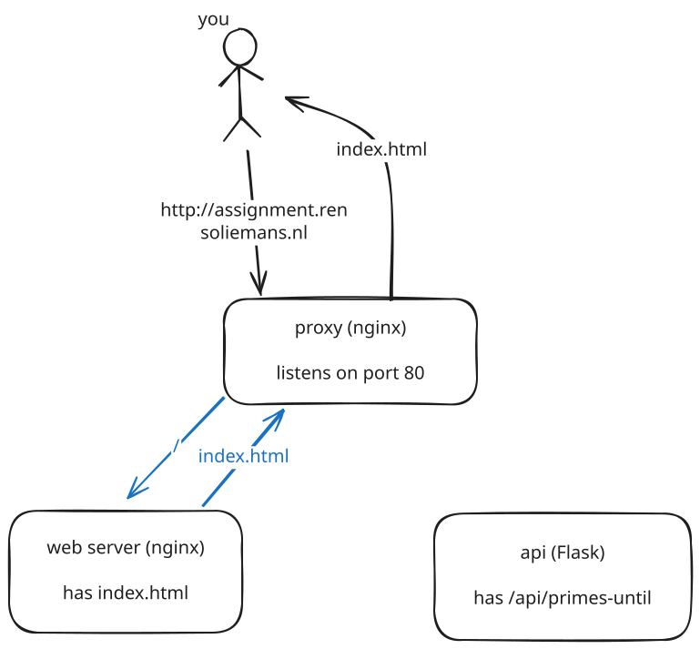
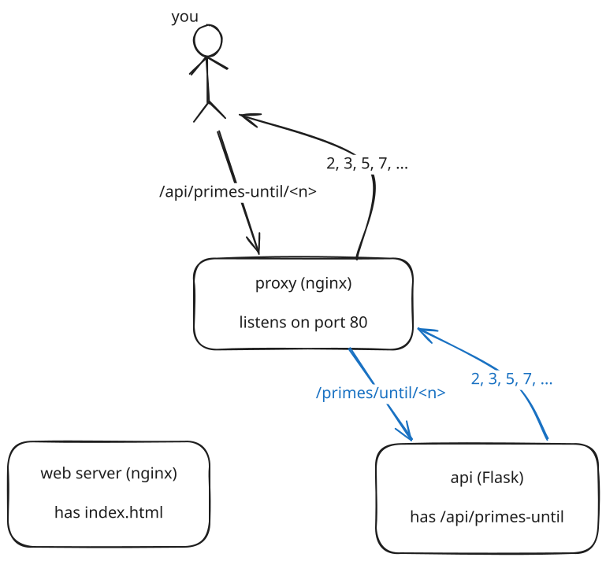

Hi there. I'm Rens, and you are looking at the result of my Docker assignment. The output is a really simple website, the one you're seeing right now. It has a bit of information about the project, and, slightly unrelated, a way to find prime numbers. I have structured the information in four categories; click on the titles to see each part of the documentation.
There are three components to this application, the proxy, web app and api. When you go to this website, you communicate directly with the proxy. This proxy handles all outside communication. Internally, it communicates with the app, and gives you the file you're reading right now. When you go this website, this is what happens:

Here, the black arrows are the web requests between you and the proxy, and the blue requests are "internal". You might also notice an unused third box, the api. This api has an endpoint at /api/primes-until/<n>, which finds all primes that are lower than n.
To try it out, see the input box at the bottom of the page. Try it out!
Whenever you press "Compute", this web page communicates with the api. Of course, this also actually goes via the proxy: the api is not exposed to the internet by itself. Here's this diagram:

.
docker compose up --build --scale app=4
Docker automatically creates 4 instances of the app
container. The proxy is configured to schedule the
requests across these instances using round-robin.
/api/health
and
/api/primes-until/<n>
.
See below for a usage of the primes endpoint.
The source
directory api/tests/
contains tests for this API, which are also run in the CI.
All communication with the webserver and the api is done via proxy, those are not exposed to the internet directly.
There are 2 big limitations to this application: lack of HTTPS, and the exposed logging container. I briefly explain the limitations below, but you can read a bit more in docs/limitations.md on my GitHub repo.
Of course, any production-ready application has to use HTTPS. However, I use Caddy at home, which fixes all certification on its own. I had some trouble with nginx' configuration and ended up spending too much time on this, so decided to move on to other features. Here's what went wrong:
I initially added a certbot service in my docker-compose.yml. This shared volumes (mainly /etc/letsencrypt/...) with the proxy service, where certbot wrote certificates and the proxy read them. The problem was that certbot can only create this certificate on the machine that listens on the domain, aka this website - and not on my local development laptop or on the GitHub runner. This broke the nginx -t test in my CI, and made it difficult to quickly develop locally.
I did not find a way to easily solve this with an automated solution (I don't want to manually run certbot commands on the production server), so I let that go. An alternative would be to use a self-signed certificate, which would have been better than HTTP. However, I had spent a lot of time on this already (and this is easy with more nginx knowledge), so I decided to move on.
This also is unacceptable, and also arose from my lack of nginx knowledge. The problem was that I wanted to see the logging on /logs, so I added a location /logs/ block in nginx, which proxied the requests to the Grafana container.
Grafana has to know that it is being served at /logs/, and I set this up in docker-compose, with the GF_SERVER_ROOT_URL environment variable.
However, Grafana kept redirecting to this root url, so when you visited /logs/, Grafana would redirect to /logs/. This is an infinite redirection! I spent quite some time troubleshooting this, but I decided to move on and leave this for now.
Check out github.com/RensOliemans/docker-platform-assignment for the total source code. The most interesting files are docker-compose.yml, proxy/nginx.conf, logging/docker-compose.yml and .github/workflows/ci.yml.